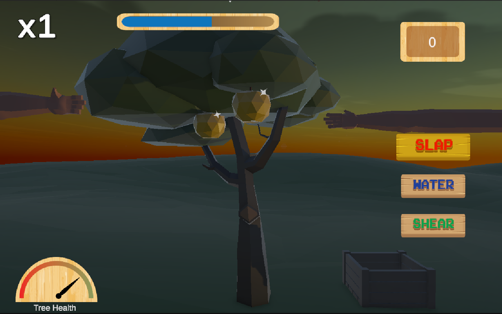
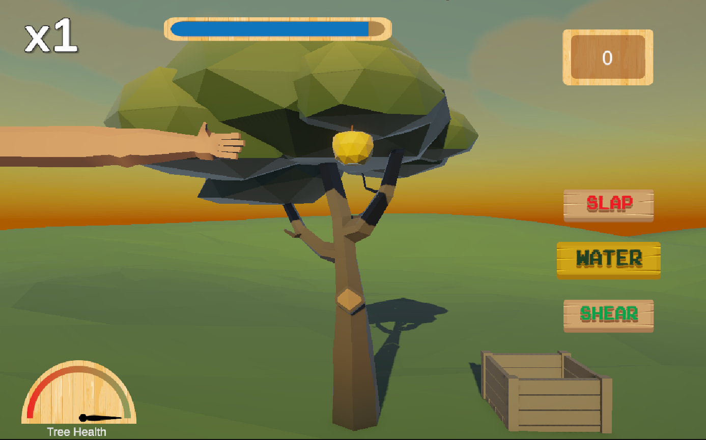

2024 / Video Game
Hesperides Garden
A short video game in the style of whack-a-mole, based on Hercules' labour of the golden apples.
- Unity
- Illustrator
- Game Design

Overview
Project description
Hesperides Garden is a game based on the labour of the golden apples. You play as a Hesperides tending a garden while Hercules' arms reach in to steal the fruit.
To survive, you have to cut apples, slap the arms away, and water the tree before its happiness meter runs out. I made the UI assets in Illustrator and Photoshop, modeled the arm in Blender, and used additional 3D assets from the Unity Asset Store. The project focused on game design techniques and iterative playtesting.
Gameplay images
Still images showing the game interface, visual style, and moment-to-moment play.


Project Files